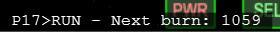

DOI=Descent Orbit Insertion
キーボードMを押して、CSMからLMに乗り換える。
Jを押して、LMを起動する。
GET 100:12:00になったら、Ctrl + Dの同時押しでLMをCSMから分離する。
Kを押すとオートパイロットのメニューが画面左下に表示される。
矢印キー← or →のどちらかを何回か押して、Engage DOIを選択。
矢印キー↑を押すと、P17オートパイロットが開始する。※

※オートパイロットを解除したい場合は、もう一度Kを押して矢印キー↑
全自動で噴射が実行されるので、何もせず待つ。
Kを押してオートパイロットを呼び出す。
Time to PDIでPDIまでの残り時間を表示。
Check PDI conditionsを選択して、矢印キー↑を押すと、PDIが実行可能か確認することができる。
実行可能な場合は、You are go for PDIと表示される。※
※PDIが実行できない場合は、base alignmentを実行するかTLIからやり直してください
Engage PDIを選択して矢印キー↑で、PDIを開始する。
オートパイロットがP63からP65までのプログラムを実行して、自動で着陸する。
P64かP65を実行中に、InsertキーかDeleteキーのどちらかを押すと、手動着陸を開始します。
| Insert | 上昇 |
| Delete | 降下 |
| End | 降下／上昇速度をゼロにする |
テンキーかフライトスティックで姿勢を制御して平行移動する。
垂直・水平方向の速度については、画面左下に表示されています。